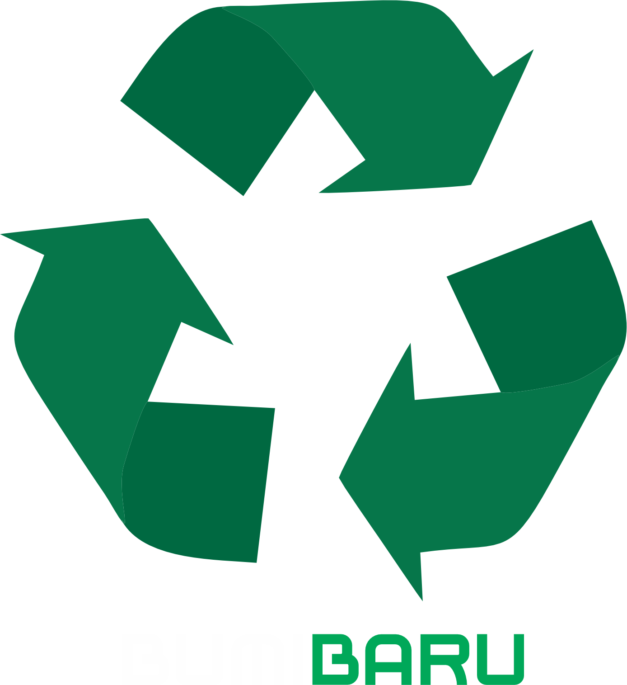

Sejarah Kami
"Dari awal yang Sederhana dalam daur ulang pada tahun 2024, BumiBaru
didirikan dengan misi sederhana. Mengurangi dampak negatif sampah
terhadap lingkungan dan menciptakan dunia yang lebih bersih dan hijau.
Dimulai dengan sebuah usaha kecil dan kemauan kami sebagai pemuda Amikom
dan juga Indonesia. Kami berfokus pada daur ulang kertas, plastik dan
lainnya. Melibatkan komunitas lokal dalam upaya pengelolaan sampah yang
lebih baik. Tahun demi tahun berjalan kita melihat krisis sampah makin
merajalela. Untuk itu, komitmen kami terhadap keberlanjutan dan inovasi
membawa Bumi Baru menuju pertumbuhan yang pesat hingga tahun 2045 dimana
Indonesia mencapai puncak emas.
Menghadapi Tantangan dengan Solusi Berkelanjutan Memasuki tahun 2025,
BumiBaru menghadapi tantangan nasional dalam pengelolaan limbah sampah
yang memuncak terutama sampah organik. Menyadari pentingnya masalah ini,
kami mengajak masyarakat untuk memilah sampah dengan baik agar kami
dapat menampung sampah tersebut untuk diolah nantinya. Kami akan bekerja
sama dengan pemerintah, perusahaan, dan komunitas untuk terus
mengembangkan solusi berkelanjutan yang dapat mengurangi jejak karbon
dan mempromosikan gaya hidup yang ramah lingkungan. Dedikasi Kami
Terhadap Komunitas dan Lingkungan Di setiap langkah perjalanan kami,
BumiBaru tetap berpegang pada nilai-nilai inti kami. Dedikasi terhadap
lingkungan, inovasi berkelanjutan, dan pemberdayaan komunitas. Kami
percaya bahwa dengan bersama-sama, kita dapat menciptakan masa depan
yang lebih bersih, lebih hijau, dan lebih sehat untuk generasi indonesia
emas 2045 mendatang. "
Visi Misi Kami
Visi kami menjadi pelopor inovasi lingkungan yang berkelanjutan, dengan menciptakan solusi pengelolaan sampah terintregasi yang meberdayakan masyarakat dan melestarikan bumi.
Misi kami adalah menggembangkan teknologi inovatif dengan menciptakan dan menginplementasikan teknologi terbaru dalam pengelolaaan sampah yang efesien dan ramah lingkungan, edukasi dan kesadaran kepada masyarakat pentingnya pengelolaan sampah melalui programedukasi yang komprehensif dan mudah diakses. Misi kami selanjutnya ialah pelayanan pengampilan sampah terdepan dengan bekerja bersama organisasi dan masyarakat untuk menciptakan dampak positif yang nyata terhadap lingkungan.